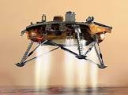

BEFORE THE JOURNEY
Image: NASA / JPL / UA / Lockheed Martin
BEFORE THE JOURNEY
Image: NASA / JPL / UA / Lockheed Martin
A Dream Beyond the Stars
Before Phoenix had a name, he was only an idea on a table full of drawings. At NASA, people looked up at the red world called Mars and wondered what it was like. Was its ground hiding ice? How cold was its distant northern land? What secrets had been waiting there for ages?
Builders, dreamers and curious minds came together to make a little explorer who could go where they could not. In a bright, spotless room, they carefully joined his pieces: a strong body, wide wings to catch sunlight, watchful cameras and a long arm that could reach the ground. They checked every part again and again. Phoenix was not ready to move yet, but his great adventure had already begun.
Goodbye, Earth!
At last, the day came. Phoenix rested on top of a towering rocket while people gathered to watch. He could not wave goodbye, but his little camera faced the sky.
A deep rumble shook the ground. Fire blazed beneath him, and the rocket rose, carrying Phoenix away from the blue world he knew. Earth grew smaller. The sky turned dark, and stars appeared all around him.
“There it is,” Phoenix thought as he looked back. “Home.”
The journey was quiet. No birds, no wind and no voices. Only the gentle hum inside his body and the distant red world ahead. He had never been so far from home, but he kept looking forward.

THE BIG MOMENT Image: NASA / JPL-/ University of ArizonaA Dangerous Welcome
After a long trip, Mars filled Phoenix's view. Red ground stretched beneath him. But reaching a new world was not the same as landing on it.
Phoenix began to fall through the sky. The air around him grew hot, but a strong cover protected him. Then, at just the right moment, his parachute opened above him like a giant flower.
The ground was getting closer. Phoenix stretched out his legs, ready to meet the land. His engines fired, slowing his fall. For a breathless moment, he seemed to float.
Then came a gentle thump. His feet touched the ground. The shaking stopped. “Did I make it?” Phoenix wondered. The quiet world gave no answer. He had arrived.
 A STRANGE NEW PLACE
Image: NASA / JPL / University of Arizona, via ESA
A STRANGE NEW PLACE
Image: NASA / JPL / University of Arizona, via ESA
A World Unlike Home
Phoenix looked around. His new home was nothing like Earth. The sky was pale and dusty. The ground was covered with tiny stones and strange patterns. There were no trees, rivers or houses.
He opened his wide, sun-catching wings and began looking around with his cameras. Everything seemed still. Even the wind felt lonely as it crossed the empty land.
“So this is Mars,” Phoenix thought. “It is colder and quieter than I imagined.”
He stretched his long arm toward the ground. It was time to explore. Far away on Earth, the team waited for his pictures and messages. They could not stand beside him, but they were sharing the adventure from home.
 A SECRET UNDER THE GROUND
Image: NASA / JPL-Caltech / University of Arizona
A SECRET UNDER THE GROUND
Image: NASA / JPL-Caltech / University of Arizona
The Secret Beneath
Every day, Phoenix tried something new. He moved his long arm and gently scraped the ground, lifting little scoops of dirt. At first, the soil looked ordinary: dusty, dry and red.
Then, inside a small trench, he noticed something bright beneath the surface. Pale pieces were hiding under the dirt.
“Snow?” Phoenix wondered. He looked closer. It was ice, resting quietly beneath the red ground. Phoenix had found frozen water on Mars!
He sent the news home. The people at NASA were excited. Their little explorer had travelled so far and uncovered something that could not be seen from above. Every careful scoop had brought them closer to an answer.
 THE END OF THE JOURNEY
Artist's view: NASA / JPL / University of Arizona / Lockheed Martin
THE END OF THE JOURNEY
Artist's view: NASA / JPL / University of Arizona / Lockheed Martin
A Little Explorer's Legacy
Time passed, and the days grew darker. The sun appeared for less time, and frost covered Phoenix. His wings could no longer gather enough sunlight to keep him working.
“I wish I could keep going,” Phoenix thought. “There is still so much to see.”
The team on Earth kept listening, hoping to hear his message again. But the quiet grew longer. At last, Phoenix fell silent.
His journey had ended, but his story had not. The pictures he sent, the ground he uncovered and the ice he found helped people understand Mars a little better. Phoenix was a little explorer who travelled a very long way, and his discoveries became part of a much bigger adventure.